* адрес оригинальной публикации в evernote: [17.04.2022 07:51] Konstantin Makarov: https://www.evernote.com/shard/s3/sh/ca918791-e41b-ee14-d49d-41a5b8f06a6f/e51c81fff5fdae1e5257be108df34d0a
[17.04.2022 08:00] Tatiana Melnik: Шедеврально!!!
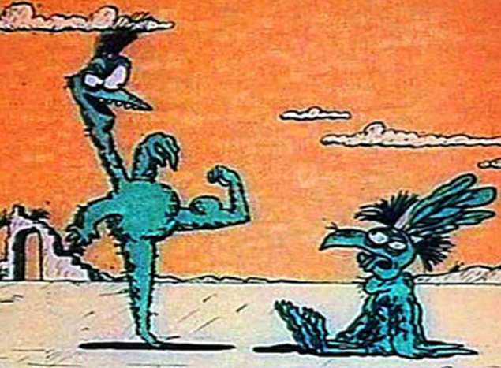
Попросили меня тут коллеги рассказать про хобби)
Привет, меня зовут Костя,
я программист, и меня покусали скалолазы.
![2XvSW4PEiaJC4W-ykrkNfwZpUMrBpjrLItfYeFb0RF9BHil30yJJcP1Q3s8yCROs7mVr7PfZ7ve9M_Bv9HiuIILKE0lV3YT4QydrqaumC79uK_iWQjiV2-F9CAlAqgijKyAeRQdMlbCwrUAeS-oHw7pvsZM9VGBRK7dwzSNJyvnn9OTkaVn6DKO-yCL7ZFTfwJ_oGdEbK_-TF1u6RHsTsidD_MnOKXxdeklzDdFtXFyWgQX48uNP0HcHm1S-yvuxokhIkbCg1ItUXfLHgtRWQ8640glCk9UOCDn1W775Qhvedoko286g69UiS0DfRLyFj9dZK7yKYqbVuK5lrQBKKQ3jFRPrnI3ibDeGWTRFE-T8C5SNYwvc004FlapLzK-ytJI1SFYV-j5IlMXbO7BjBMeC-6lJK_VrR-XU4aHbDlyVAYrE0c2Nt9EXKPZtDke9KWrcDFxRwmOBfUYQ96btez58P6TmToT92WxvmmqJL2hRG4BY2sp0OsBsAT3C6YAm_Iw9u2XLndWo_0wRSYMh1cATQR33CvfvMWAJ_iJlflPNkFv7qiJLz8GbCj9LcRq5fIxJWA-yk_8JuU_kDemByeWc3UL7LJq6t_eq8Gm1Gz-iqniMh46Du-cNpYarX6VEl2lkacxnQu3RjELCvltG-T3fO9MrDaUgBxQI5WA3Pgdly5GWgnkghsFe_X9mYXYIFzQvLaJUpHO0pFQxXZLA9Sq7sAfN1k_OzmwANNqfZ4KmhOFQPcxCOt2r7IHiY=w1514-h2018-no](../_resources/82d991ba49b718ed05c8773ef8f4e427.jpg)
Покусанный скалолазом — сам становится скалолазом, заражает свою семью и при всякой возможности старается укусить окружающих и прочих неосторожных. Не путать с альпинистами! Те вообще работу бросают и в горы уходят.
"В конце жизненного пути ты не вспомнишь о времени,
что потратил, работая в офисе или подстригая свой газон.
Лезь на эту чертову гору."
Джек Керуак
Почему скалолазание?
Не сказал бы, что совсем ничего не предвещало, вырос я вполне себе в горной местности, скалы местами торчали тут и там, внушали своим видом, ну и вызывали всяческие опасения, если обойти-зайти сверху и посмотреть оттуда вниз. Всякому нормальному человеку это жутко интересно и страшно, но к обычному житию и пропитанию никакого сродства не имеет.
По телевизору же время от времени показывали всякие интересные фильмы, где люди пообвяжутся непонятными верёвками, а потом у них внезапно карабины-ролики всякие расстёгиваются и они оттуда трагично падают. В общем, откуда-то в голове поселилось понятие "скалолаз", ещё до просмотра одноименного фильма со Сталлоне, который, к слову, про другое вообще. Отношение же ко всему этому было скорее как благоговейно-недостижимому, вроде "в цирке вон тоже акробаты чего на трапециях и канатах вытворяют".
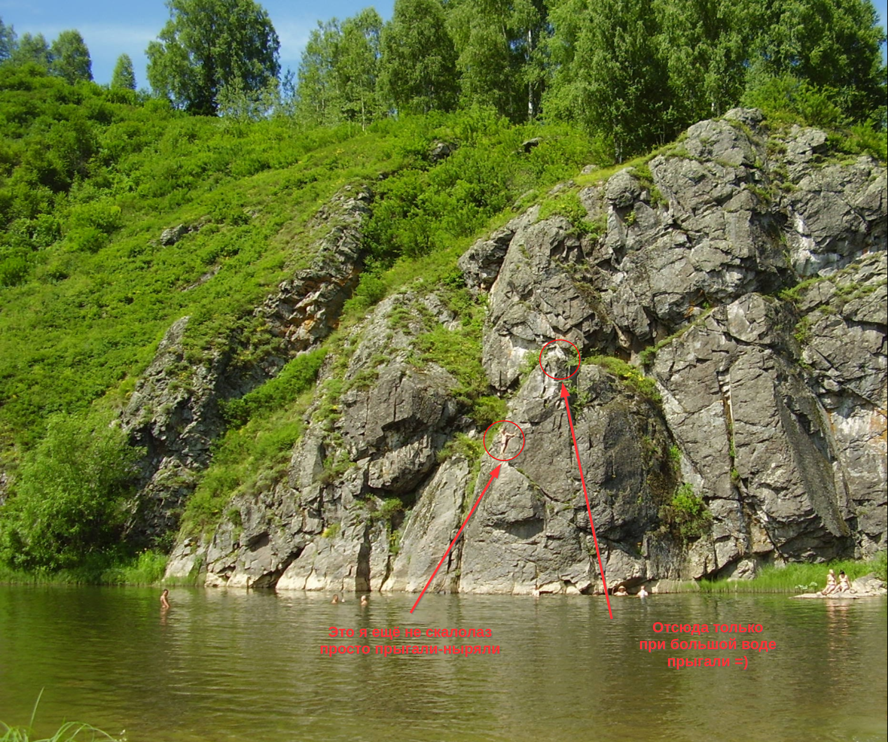
Прошли годы, ... Я вроде немного притёрся в Рамаксе, и вот коллега по кабинету:
- Хочешь на скалодром?
- Ээ..
- Бесплатно проведу.
- Ну давай.
С соседнего стола:
- А я ж тебя уже звал! чо со мной не пошёл тогда?
о_О а я и не помню.. или что-то смутное, навроде: "Ну его, это ж поди экипировка нужна, что-то учить, куда-то ехать"...
В общем эти двое добрых товарищей меня с моей женой провели — акция у них на скалодроме такая бессрочная: "Приведи друга".
Знакомо, только им ничего за это не дают, просто такое само-расширяющееся сообщество.
— получается, поэтому. Так совпало. Хорошо, что не покер.
Что это такое, в чем смысл?
В первый раз мы сами по себе, ничего не понятно было, конечно — глаза разбегаются от обилия разноцветных зацепок на стенках.
Люди кругом что-то пытаются лезть, как-то сложно, зачем-то выгибаются, прыгают, падают. Чего мучаются?
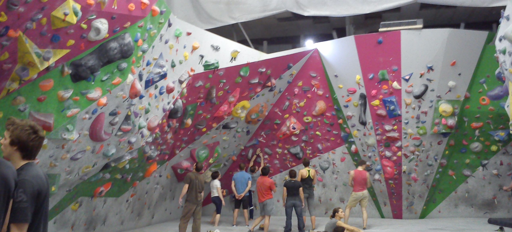
Поэтому если кто соберётся — сразу рекомендую записываться в групповые занятия для начинающих, будет повеселей.
Я же, чтоб два раза не вставать, взял пробный абонемент, ещё через занятие пошёл в магазин за первой парой скальных туфель.
Да, магия скалолазания — по большому счёту, чтобы лезть, нужны только руки и ноги.
То есть цель спортивного скалолазания — пролезть маршрут "чисто", без вспомогательного железа, верёвок, используя только силу и возможности своего тела, пользуясь либо естественным скальным рельефом, либо предоставленными на стенде зацепками.
В наше время ноги обувают в скальные туфли — очень плотно облегающая обувь, в них можно стоять на каменных выступах-"пупырышках" размером с напёрсток.
Чтобы руки не потели — мешочек с белым порошком, ха-ха, магнезией.
Скальники на ногах и магнезия на пальцах — гармоничное сочетание, как инь и янь.
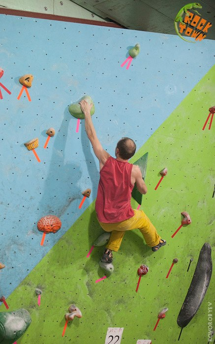
Есть три дисциплины (вида):
-
Скорость — стандартные (эталонные) и не очень трассы на время.
-
Трудность — лазание с верёвкой подготовленных маршрутов на скалах или в залах на высоких стенках.
-
Боулдеринг — лазание без верёвки, невысоко, на валуны, но по возможности над страховочными матами, чтоб падать не больно было.
Падать приходится много. Ну или срываться, повисая на верёвке. К этому привыкаешь, это норма и это весело.
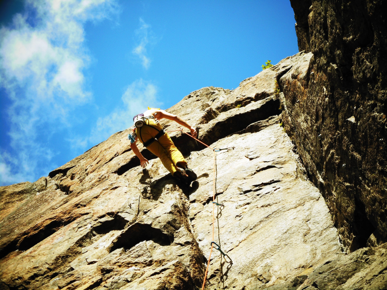
В трудности и боулдеринге трассы различаются категориями — по уровню сложности. Повышать свой уровень можно почти бесконечно, потому что, добравшись до своего естественного предела, подняться на следующую категорию — может занять годы, в зависимости от упорства и системности тренировок.
Как бы ты ни был крут, на следующей трассе в твоей категории всегда найдётся зацепка или движение, которые собьют с тебя всю спесь.
В этом спорте все переживают одно и то же — и новички, и профи.
Хрупкие женщины лезут на равных с мужчинами, а на многих трассах даже имеют преимущество.
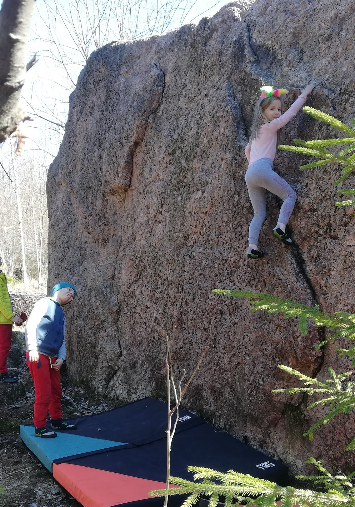
Зачем лезть наверх?
В принципе — незачем, оставайтесь, как сказал классик ... внизу
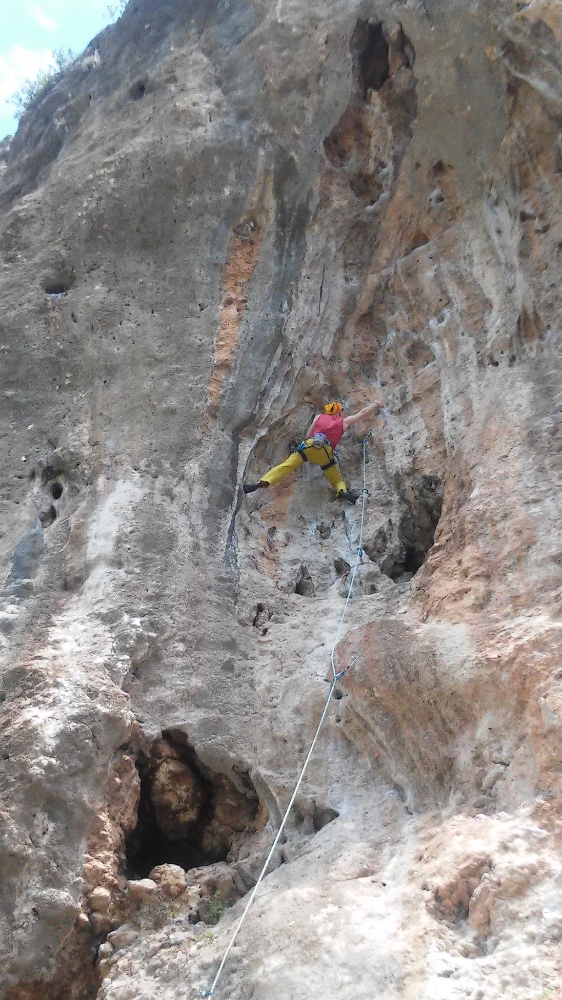
Бессмысленно — с таким трудом карабкаться наверх, чтобы сразу потом спускаться вниз, но почему-то довольным.
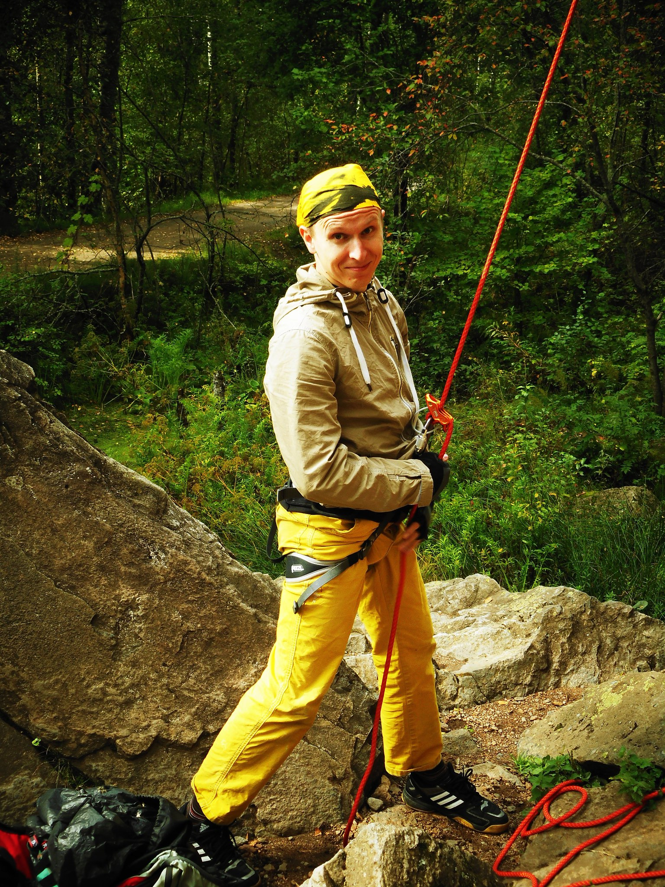
Не менее глупо быть в очередной раз уверенным, что в следующий-то раз точно получится залезть и не сорваться.
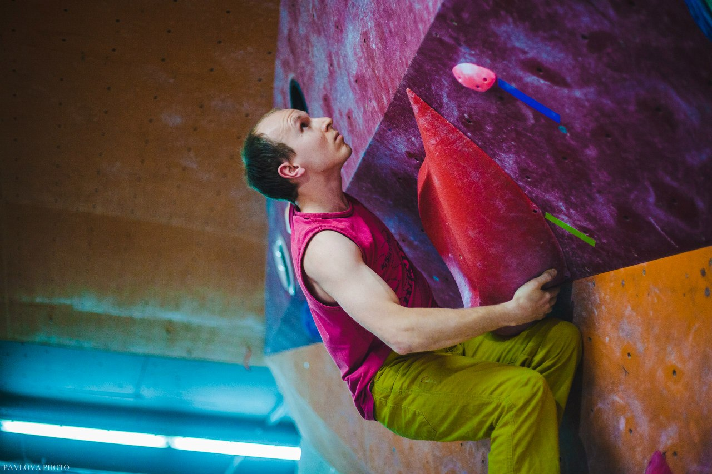
Вдруг снова замечать в себе забытый страх высоты — весьма щекотливое чувство.
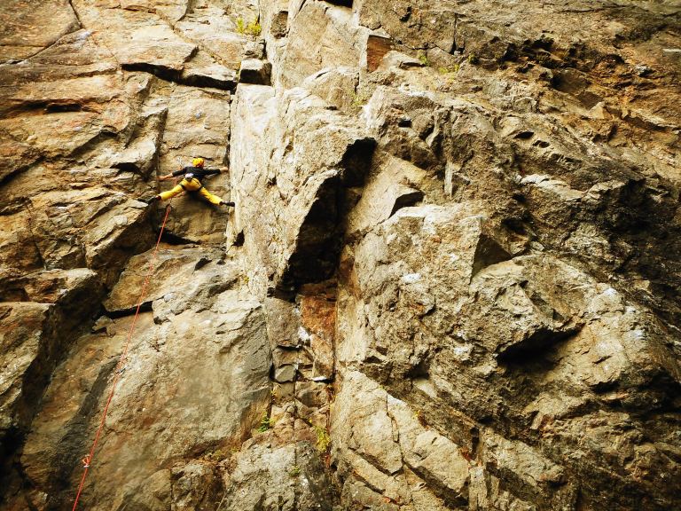
По итогу всех трудов, никому вокруг неинтересно, как ты пролез то самое сложное место, но тебе именно сейчас рассказать им всё равно нужно, лучше даже показать, размахивая в воздухе руками, и смешно задирая ноги прямо посреди вагона метро.
А ещё все лезут совершенно по-другому, и страхуют неправильно, в общем, всегда есть о чём поговорить.
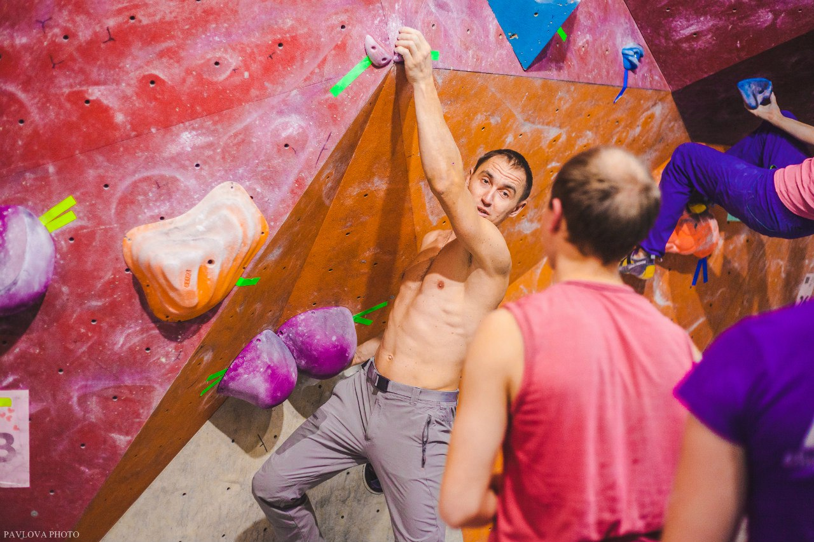
И народ там сплошь доброжелательные зайки, аж скулы сводит. Половина из них, кажется, прямо живёт на скалодроме или на камнях.
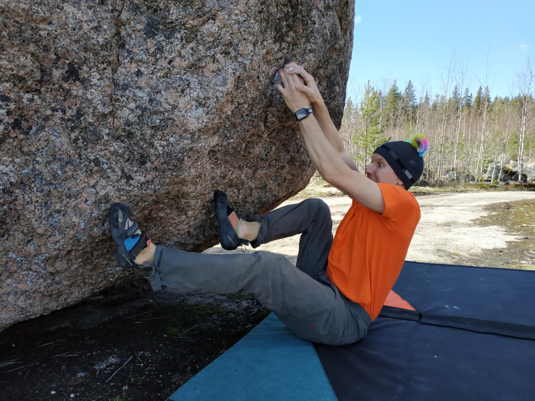
Вообще, хватит развивать скалолазание — скалодромов в Питере уже больше, чем в Москве (upd май 2026 - закрылись 4, стало меньше T_T ),
а на лесных парковках под карельскими скалами летом машину некуда воткнуть.
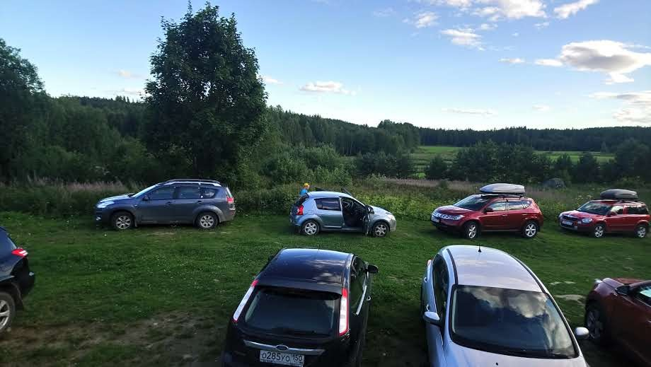
Как это помогает в работе?
Простой ответ — никак.
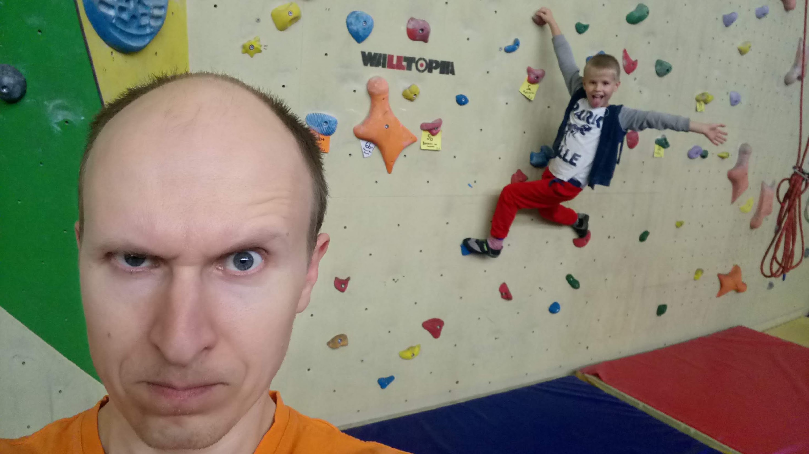
Сложный — в жизни, говорят, должен быть равновесный баланс между семьёй, работой, отдыхом, дружбой, чем-то там ещё, вроде.
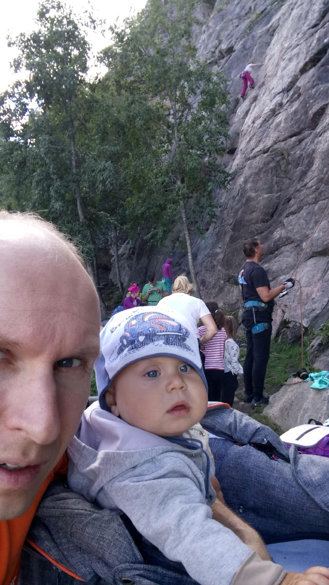
Время нынче трудное (тогдашнее трудное точно было проще, ведь, да?), все эти балансы сильно "поехали".
![c3DOLvtaJNYsz1g91WgH1kJHdepqiCStBtLBuJncuEbdw-vVqBASXWpI4OkOElRC6fBFxDdAUe-anYD9V7Ld_SQ8wgQWRWDFVXZrX1vNV3CTBoeVwzCFD3PL4uRS2gGB2cVo-8wL1c4bEs11eXYUWgauwip6bMxxQ09lQteS24-dTWN2AxKR79xxElfTl4MrVSK1H9IAJ4IX6mOWEwCvWVBLk3AJVgK8p5TL1k-RtXyOOaFyJ2BiLBB1BcJD47ajkKsv1bdeAW3jPopxj91Xp9ct_f96XNdJLJ-D4-icJdAWwypj-CWcImIySriZKtY5vupTFRZlZW8qizdjZeMjnklrXlbddDuy7QF_eqB6Xpb79xQb9wDf6CK4eZf5RZApQv5fEsVtPzwegbWNJjb6YSOuIg2eKyoHwrYN4bAo7fehHWWT4cOTwBkD1DKkzg2gB0grMFz2fngtE3tqYr4EKKe2AyH3Ncce95PdcThe6rJ3XWWVBptqpTqWvOqmMkQ_1OUmWsAarRre-HtSpkXo5J3zPbPt5w_7kdrYzCRpIzoqCwVTfJCo0w64ViyWPrG4c_REKtoM3NT0mGWL6lrlcQfCb3OKsYuyM_4IXEAPia1hHnNN_2muuerTrRzKAIe79gfeeGS1iKJjRvA38Vf2lg-uhILZmXx2YrF1P3UfdfdeQJOApRdpdXchHjx_uHuTOK6Bm5vaC2MIfoWmGX8Znc9NSbcWp9PEdmgneY02fdnJbs7UAjTJrx4aSMnMDg4=w2944-h1656-no](../_resources/e7a379ecadea1b59299af5430600e165.jpg)
Поэтому цель простая: каждые солнечные выходные ночевать там в лесу.
![6Rq4YirqK0jNgwIxRKPZrdv_8vIjCfcSAPQzCzoKEou2fVOUj2WGJmPkwBmTtXxCt5Cwrs6TNs7xOxgsEqaB11-UNjTpLn8TbxUlsA3H2WepvcVQDg9sKTVAo20J5zOpI6--MGvObygDRE6QwVSbCsDyksO5mbCRJixYJMDjHG8OaHCdyg_CNyZnlAlM77rQDnkd7W3JsHefDrQwYS9Ds1DiIuYiLoQgmA68RXzwoBCtSPc-Z8Shewjp21RLRvtbhaYBsOUlxen6IOpYDt0tcUxtXzVjsacRRWFhIjCOjLl5W7mCVyJfDV1xVzBsTULkxMFbl1MLNU75A82HpvZYm92XaKr7eC17izj4m-c6x7jo7fQRxKB4Pek2CxOb81kDjLxW_UY_QZvRK5Dyrory5hsZvY14UP4sTLPhCUlEm0Few0V7BUYKSm0x_NimpIY_-bu4yCfbudaVXsbc6Ny1SbVROB5Mja1qiakX8Itr5viszeudSYXWf0A2tK9YfrU6rramY7MSRhHBA2eePc9NEfJ3_9un9JlP9l-kPtEFZNXv7TKEaozzczNwy6YaCUATU7FBc5TBUnoIGruCyofHBSk_eDzDVwDjkE-CDaIcHYlj5mTSBi2NTSPRXju14yIgTNlEwo1OX6rtRn8Te_sB2RRnqq0amUG1N7-Nvmt-AESIwoAE0vZdtNLrenBgZyR2JNm9sj9vS0QzEVtZawXp8_WeLaKh0AIuszk_RPCWZFPlf1P6_JBXKOaM0sj7_9U=w2692-h2020-no](../_resources/c32b45ba6d5301c3d7d8edca4d46f238.jpg)
Или хотя бы одним днём выехать — полазать по скалам.
Потому что в скалолазании главное — скалы.
![2p0MXfg5us0vF1IMU_zYgDdYpYUGr2O0sKtZE3FuNsOM2xZ5zdFCLPjiSXzGYEmPY06kZ1J5mn396EDm2wtIPhnXDAMNg0qesckqv7Ymoll3jIwEXOsKlY4dU0FdQEhqJFCVPA_7GX0Y4bJH9y76I58s_qM5Bof-Tfwkv6tp43PMFg2XUJbQiS3b4t5qtNT2P9ocxGpVUsZdtvwehknNqMeTqNBuLBQCfr7Eth2ZbecVMafiob3O52QjGsVNyxgH2p3Qq_WwPD14nDZmjXnOYWaBqVmEdR2lC2r5u-D8QBzwJYQ7jRy0AJjhlklBhrJRLIXWYa5pRO4wz2w9CSrs3qCAm8i8uK8wE_sHw-Vgx7vPd4iJLBkgDMT1g66tYIuiv3TCMZJeJ4DRNmUX0j0slmwT6yYQzxByifqsaHoxusqZRVkGbw6QyolJ1q_vF0jBf-waa59I4NANZ1MR9ezFAwMo4xQ9PfXdoRRwSQh9codQIxujDpuYi0ymabaO-SXSkFmnXnPBXyeTYGv2UzuUGdpQ8tlAQAH3W-ZhoJ2N-nYq8nvRJ4Xkp7OizeW074l_g1h2fqMKD1n6Zm8y_vZArEZNijiRwbIGncWQzCwfBJ1S5wAA0FJ5evf4XOpkS7vF6qQyCPkuVxntiv_bokpJuP4i05KFPAn2xEs-pwATUEr4xEcVtBUNif7v6UHZbivVlFJV-V2Ez8GKhM0lZ_geYxXPwbf_-pyP9ETIJJCFIKcD5k1JY-BS8CPnXkj8Dg=w2944-h1656-no](../_resources/ee8cfea74df7e1003564228d293a99ec.jpg)
Я не понимаю, как можно быть gym-only — кажется так себя называют те из наших западных партнёров, которые тренируются только в залах на искусственных рельефах.
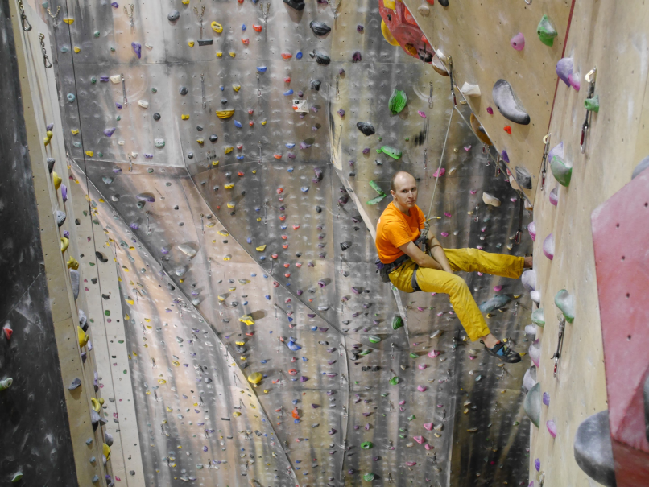
А тут целыми семьями, с детьми (кто их спрашивал?) выбираются, радуются движению на свежем воздухе. Фестивали проводят (не был пока ни на одном), соревнуются.

Можно ещё порассказывать, что спина перестала болеть, дескать, "мышечный корсет" укрепился, наверняка кровоснабжение мозга улучшилось, тонус, всё такое.
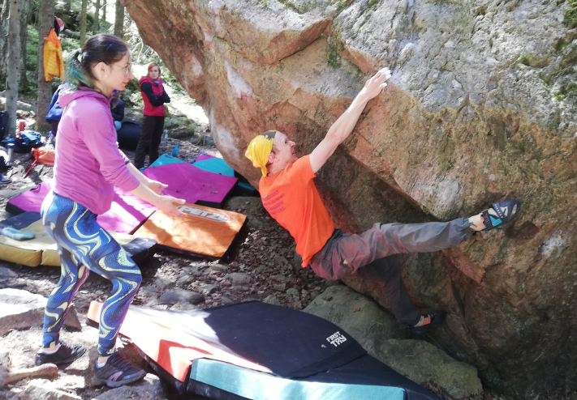
Плавание, наверное, не менее полезно.
Однако, когда тебя молодого и крепкого облезает дядька лет уже далеко под 60, а потом его скромная и кроткая супруга-напарница вылезает ту же трассу, чтоб забрать с неё свои оттяжки — с непривычки не сразу подобрать челюсть вспоминаешь.
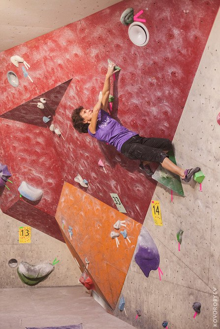
Если хочется попробовать
Ближайший скалодром. Как сказал — лучше спросить, когда стартует новая группа новичков (обычно вводных 3-4 занятия для 4-8 чел.). Скальные туфли, магнезию, и даже обвязку с верёвкой, если есть высокая стенка, обычно предоставляют. При каждом скалодроме есть прокат.
Скалодромные тренеры в летний сезон организовывают выезды на настоящие скалы, и всё же перед этим лучше попробовать в зале. Лазание по суровому карельскому граниту для новичков-перворазников — это боль.
![2O4PUObkVbvZ7UrvZpdBsw-6SfvuYN2TtBpv0mifqwcONc551j_P4vsWh6EbG42y78-nufuk1CIXMhUu9chXin_jXG8mt_SfovLYWto1Nvw3gmT-l0gQCxFbJvizYKaMNu1XXMop4idD1yonYuF0PxohSfNS5P4w9hqVv_3pbWKLBsF4VNSEiBNC5lhgKEQX9qQqHoXlWF80UZQ2rKcBAELOTF8rvKVskaToTettogSA6c_eerLe9Lz0E0G53rSvqkaFJlac_TfrUaacURnAqnhi_s_LQkNNK6r-DG6R364sDYp7oCA5oEoiEHgMU2Ihgt3Q-yxfNw7qblN1S04YaHYU8z0PRgvHlkfgtMB--dZON1KZWfT9ZulJPrMZ2pJgVtzMp68v8xGfE4fmAvLeHjJeZkmdwnPQ6dwTc5sTqpYpreAypTy3pXKUprDvVNpFLVZHSaxIzU-O-KfzYWibwSj62pl1bkEzRX-AAP3he0ImThxoexRcY5H3CU7VZOTMZrFVerCeQ1zT1gisFrhtOmb52pemdXuQNxQsHkZDPltIK_668cTQ_oYqD8nHs9fwzAXgGCicB4c-LmzGH3gh8fSyG-MwVzz2MLkOvNbKUZB2G67siNBhCjhIIczis4KCMm_06smMiYPg7WA5AZYjSBzRa_ycBFUvgJ_6BCLUCwe_BHG9w289i0AEUnrzDNmCZYVzUFsb0KqpC3RF9OVRyBi8R1UdhmjupoIKle4mYvztoo1EhPssOg0GPgB0c4o=w1512-h2018-no](../_resources/1091f50e6c3ffd8dd12aaf7e06d1b80a.jpg)
Скалолазы — люди заразительные (я сейчас не про ковид) своей энергией и коллективностью.
Наверное потому что это такой особенный спорт, где все не просто тусуются, а действительно друг другу доверяют свои жизни.
По-другому никак.
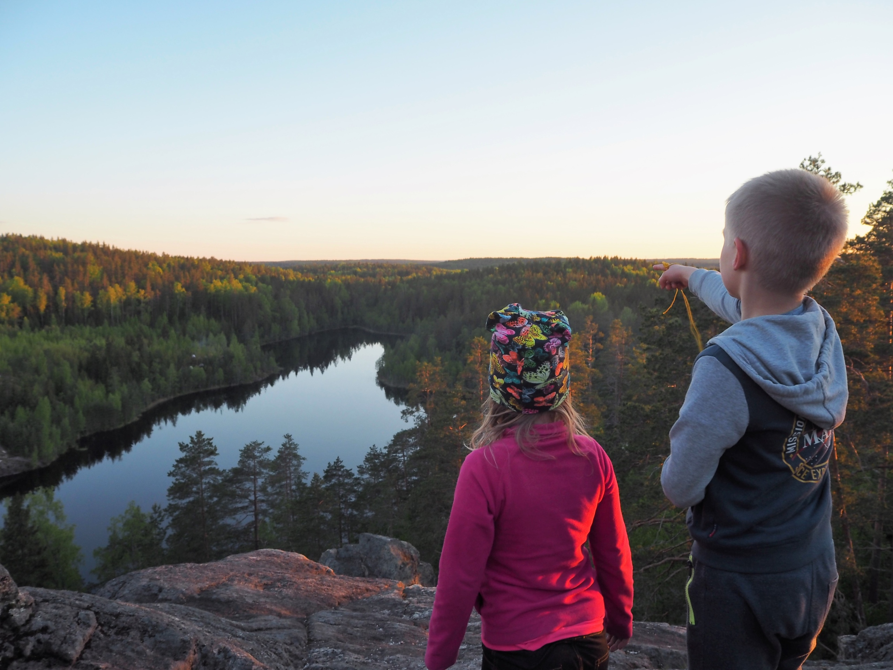